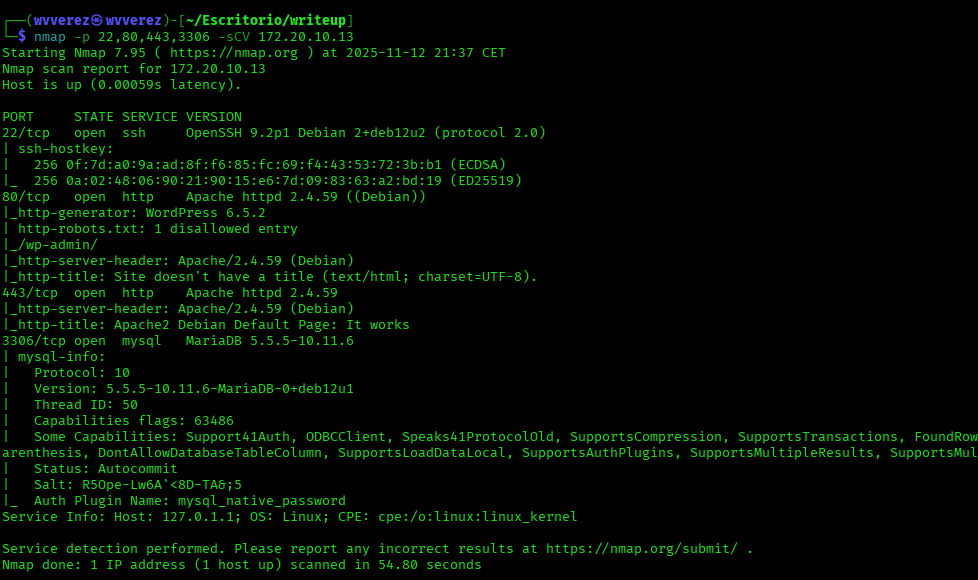
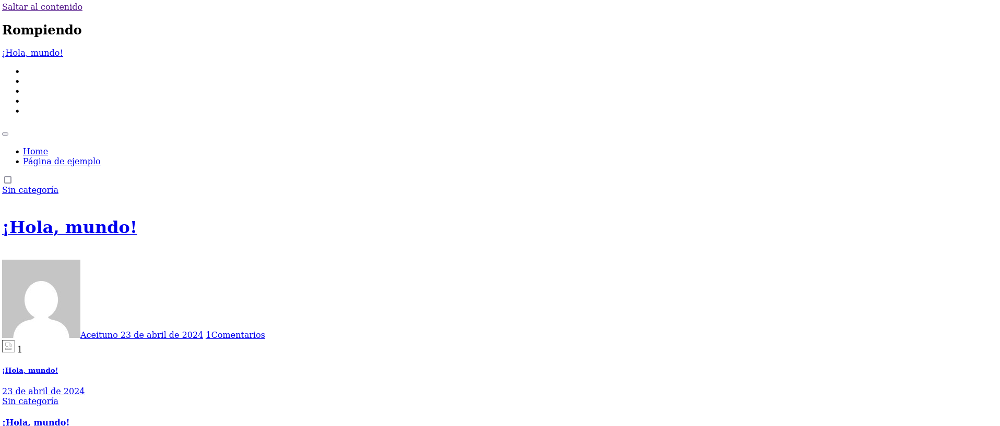
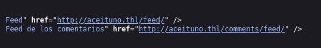
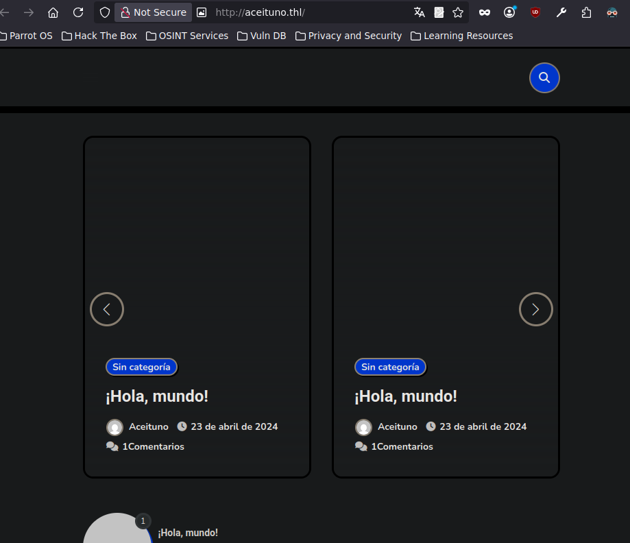

En el día de hoy vamos a resolver la máquina "ACEITUNO" una de mis máquinas preferidas de thl aclarar que la primera mitad fue resuelta en kali y la otra mitad en parrot por problemas técnicos
Vamos con la resolución lo primero que hice fue un sencillo escaneo de red nmap para buscar puertos abiertos.

Bien, vemos 4 puertos abiertos el 22,80,443 y 3306... Vamos a realizar un segundo escaneo para determinar el servicio y versión misma.

Bueno, vemos 2 puertos enfocados a http donde normalmente el puerto 433 es para https pero bueno vemos que no es el caso. Vamos a ver de primeras el puerto 80, donde en el segundo escaneo de red
vemos que detecto que es un WordPress en la versión 6.5.2.
Vamos a buscar la página.

Vemos que falla en la carga, cuando esto ocurre es probable que tenga algún dominio asociado, en el código fuente encontramos el dominio "http://aceituno.thl"

asi que lo asignamos al /etc/hosts y probamos a buscarlo ahora a ver si ya nos carga la página.

Efectivamente nos carga la página, no encontré mucho en la página muchos blogs de el usuario "aceituno" pero si vas a wp admin podemos comprobar si el usuario aceituno existe en la base de datos.